NCERT Solutions For Class 12 Chemistry Chapter 1 The Solid State
Topics and Subtopics in NCERT Solutions for Class 12 Chemistry Chapter 1 The Solid State:
| Section Name | Topic Name |
| 1 | The Solid State |
| 1.1 | General Characteristics of Solid State |
| 1.2 | Amorphous and Crystalline Solids |
| 1.3 | Classification of Crystalline Solids |
| 1.4 | Crystal Lattices and Unit Cells |
| 1.5 | Number of Atoms in a Unit Cell |
| 1.6 | Close Packed Structures |
| 1.7 | Packing Efficiency |
| 1.8 | Calculations Involving Unit Cell Dimensions |
| 1.9 | Imperfections in Solids |
| 1.10 | Electrical Properties |
| 1.11 | Magnetic Properties |
NCERT TEXTBOOK QUESTIONS SOLVED
1.1. Why are solids rigid?
Ans: The constituent particles in solids have fixed positions and can oscillate about their mean positions. Hence, they are rigid.
1.2. Why do solids have definite volume?
Ans: Solids keep their volume because of rigidity in their structure. The interparticle forces are very strong. Moreover, the interparticle spaces are very few and small as well. As a result, their volumes cannot change by applying pressure.
1.3. Classify the following as amorphous or crystalline solids: Polyurethane, naphthalene, benzoic acid, Teflon, potassium nitrate, cellophane, polyvinyl chloride, fibreglass, copper
Ans: Crystalline solids: Benzoic acid, potassium nitrate, copper Amorphous solids: Polyurethane, Teflon, cellophane, polyvinyl chloride, fibreglass
1.4. Why is glass considered as super cooled liquid ? (C.B.S.E. Delhi 2013)
Ans: Glass is considered to be super cooled liquid because it shows some of the characteristics of liquids, though it is an amorphous solid. For example, it is slightly thicker at the bottom. This can be possible only if it has flown like liquid, though very slowly.
1.5. Refractive index of a solid is observed to have the same value along all directions. Comment on the nature of this solid. Would it show cleavage property?
Ans: As the solid has same value of refractive index along all directions, it is isotropic in nature and hence amorphous. Being amorphous solid, it will not show a clean cleavage and when cut, it will break into pieces with irregular surfaces.
1.6. Classify the following solids in different categories based on the nature of the intermolecular forces: sodium sulphate, copper, benzene, urea, ammonia, water, zinc sulphide, diamond, rubedium, argon, silicon carbide.
Ans: Ionic, metallic, molecular, molecular, molecular (hydrogen-bonded), molecular (hydrogen-bonded), ionic, covalent, metallic, molecular, covalent (network).
1.7. Solid A is a very hard electrical insulator in. solid as well as in molten state and melts at extremely high temperature. What type of solid is it?
Ans: It is a covalent or network solid.
1.8. Why are ionic solids conducting in the molten state and not in the solid-state?
Ans: In the ionic solids, the electrical conductivity is due to the movement of the ions. Since the ionic mobility is negligible in the solid state, these are non-conducting in this state. Upon melting, the ions present acquire some mobility. Therefore, the ionic solids become conducting
1.9. What type of solids are electrical conductors, malleable and ductile?
Ans: Metallic solids
1.10. Give the significance of a lattice point.
Ans: The lattice point denotes the position of a particular constituent in the crystal lattice. It may be atom, ion or a molecule. The arrangement of the lattice points in space is responsible for the shape of a particular crystalline solid.
1.11. Name the parameters that characterise a unit cell.
Ans: A unit cell is characterised by the following parameters:
(i)the dimensions of unit cell along three edges: a, b and c.
(ii)the angles between the edges: α (between b and c); β (between a and c) and γ (between a and b)
1.12. Distinguish between :
(i) Hexagonal and monoclinic unit cells
(ii) Face-centred and end-centred unit cells.
Ans:
(i) In a hexagonal unit cell :
a = b # c; α = β = 90° and γ = 120°
In a monoclinic unit cell :
a # b # c and α = γ = 90° and β # 90°
(ii) In a face-centered unit cell, constituent particles are located at all the corners as well as at the centres of all the faces.
In end-centered unit cell, constituent particles are located at all the corners as well as at the centres of two opposite faces. (C.B.S.E Foreign 2015)
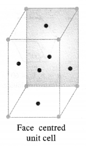
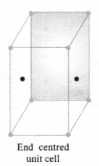
1.13. Explain how many portions of an atom located at
(i)corner and (ii)body centre of a cubic unit cell is part of its neighbouring unit cell.
Ans: (i) An atom at the comer is shared by eight adjacent unit cells. Hence, portion of the atom at the comer that belongs to one unit cell=1/8.
(ii)An atom at the body centre is not shared by any other unit cell. Hence, it belongs fully to unit cell.
1.14. What is the two-dimensional coordination number of a molecule in a square close-packed layer?
Ans: In the two-dimensional square close-packed layer, a particular molecule is in contact with four molecules. Hence, the coordination number of the molecule is four.
1.15. A compound forms hexagonal close-packed. structure. What is the total number of voids in 0. 5 mol of it? How many of these are tetrahedral voids?
Ans:
No. of atoms in close packings 0.5 mol =0.5 x 6.022 x 1023 =3.011 x 1023
No. of octahedral voids = No. of atoms in packing =3.011 x 1023
No. of tetrahedral voids = 2 x No. of atoms in packing
= 2 x 3.011 x 1023 = 6.022 x 1023
Total no. of voids = 3.011 x 1023 + 6.022 x 1023
= 9.033 x 1023
1.16. A compound is formed by two elements M and N. The element N forms ccp and atoms of the element M occupy 1/3 of the tetrahedral voids. What is the formula of the compound? (C.B.S.E. Foreign 2015)
Ans: Let us suppose that,
the no. of atoms of N present in ccp = x
Since 1/3rd of the tetrahedral voids are occupied by the atoms of M, therefore,
the no. of tetrahedral voids occupied = 2x/3
The ratio of atoms of N and M in the compound = x : 2x/3 or 3 : 2
∴ The formula of the compound = N3M2 or M2N3
1.17. Wh ich of the following lattices has the highest packing efficiency (i) simple cubic (ii) body-centered cubic and (iii) hexagonal close-packed lattice?
Ans: Packing efficiency of:
Simple cubic = 52.4% bcc = 68% hcp = 74%
hcp lattice has the highest packing efficiency.
1.18. An element with molar mass 2:7 x 10-2 kg mol-1 forms a cubic unit cell with edge length 405 pm. If its density is 2:7 x 103 kg m-3, what is the nature of the cubic unit cell ? (C.B.S.E. Delhi 2015)
Ans:
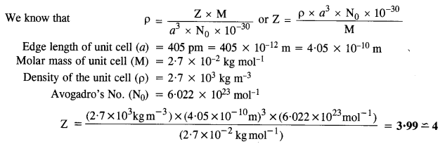
Since there are four atoms per unit cell, the cubic unit cell must be face centred (fcc) or cubic close packed (ccp).
1.19. What type of defect can arise when a solid is heated? Which physical property is affected by it and in what way?
Ans: When a solid is heated, vacancy defect is produced in the crystal. On heating, some atoms or ions leave the lattice site completely, i.e., lattice sites become vacant. As a result-of this defect, density of the substances decreases.
1.20. What types of stoichiometric defects are shown by (C.B.S.E. Delhi 2013)
(i) ZnS
(ii) AgBr?
Ans:
(i) ZnS crystals may show Frenkel defects since the cationic size is smaller as compared to anionic size.
(ii) AgBr crystals may show both Frenkel and Schottky defects.
1.21. Explain how vacancies are introduced in an ionic solid when a cation of higher valence is added as an impurity in it.
Ans: Let us take an example NaCl doped with SrCl, impurity when SrCl2 is added to NaCl solid as an impurity, two Na+ ions will be replaced and one of their sites will be occupied by Sr21- while the other will remain vacant. Thus, we can say that when a cation of higher valence is added as an impurity to an ionic solid, two or more cations of lower valency are replaced by a cation of higher valency to maintain electrical neutrality. Hence, some cationic vacancies are created.
1.22. Ionic solids, which have anionic vacancies due to metal excess defect, develop colour. Explain with the help of a suitable example.
Ans: Let us take an example of NaCl. When NaCl crystal is heated in presence of Na vapour, some Cl–ions leave their lattice sites to combine with Na to form NaCl. The e-1 s lost by Na to form Na+ (Na+ + Cl–—> NaCl) then diffuse into the crystal to occupy the anion vacancies. These sites are called F-centres. These e-s absorb energy from visible light, get excited to higher energy level and when they fall back to ground state, they impart yellow colour to NaCl crystal.
1.23. A group 14 element is to be converted into n-type semiconductor by doping it with a suitable impurity. To which group should this impurity belong?
Ans: Impurity from group 15 should be added to get n-type semiconductor.
1.24. What type of substances would make better permanent magnets, ferromagnetic or ferrimagnetic. Justify your answer.
Ans: Ferromagnetic substances make better permanent magnets. This is because when placed in magnetic field, their domains get oriented in the directions of magnetic field and a strong magnetic field is produced. This ordering of domains persists even when external magnetic field is removed. Hence, the ferromagnetic substance becomes a permanent magnet.
NCERT EXERCISES
1.1. Define the term ‘amorphous’. Give a few examples of amorphous solids.
Sol. Amorphous solids are those substances, in which there is no regular arrangement of its constituent particles, (i.e., ions, atoms or molecules). The arrangement of the constituting particles has only short-range order, i.e., a regular and periodically repeating pattern is observed over short distances only, e.g., glass, rubber, and plastics.
1.2. What makes glass different from a solid such as quartz? Under what conditions could quartz be converted into glass?
Sol. Glass is a supercooled liquid and an amorphous substance. Quartz is the crystalline form of silica (SiO2) in which tetrahedral units SiO4 are linked with each other in such a way that the oxygen atom of one tetrahedron is shared with another Si atom. Quartz can be converted into glass by melting it and cooling the melt very rapidly. In the glass, SiO4 tetrahedra are joined in a random manner.
1.3 Classify each of the following solids as ionic, metallic, modular, network (covalent), or amorphous:
(i) Tetra phosphorus decoxide (P4O10) (ii) Ammonium phosphate, (NH4)3PO4 (iii) SiC (iv) I2 (v) P4 (vii) Graphite (viii), Brass (ix) Rb (x) LiBr (xi) Si
Sol.
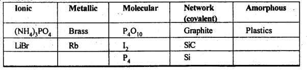
1.4 (i) What is meant by the term ‘coordination number’?
(ii) What is the coordination number of atom
(a) in a cubic close-packed structure?
(b) in a body centred cubic structure?
Sol. (i) The number of nearest neighbours of a particle are called its coordination number.
(ii) (a) 12 (b) 8
1.5. How can you determine the atomic mass of an unknown metal if you know its density and dimensions of its unit cell ? Explain your answer. (C.B.S.E. Outside Delhi 2011)
Sol.
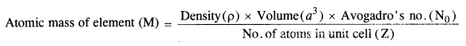

1.6 ‘Stability of a crystal is reflected in the magnitude of its melting points’. Comment. Collect melting points of solid water, ethyl alcohol, diethyl ether and methane from a data book. What can you say about the intermolecular forces between these molecules?
Sol. Higher the melting point, greater are the forces holding the constituent particles together and thus greater is the stability of a crystal. Melting points of given substances are following. Water = 273 K, Ethyl alcohol = 155.7 K, Diethylether = 156.8 K, Methane = 90.5 K.
The intermoleoilar forces present in case of water and ethyl alcohol are mainly due to the hydrogen bonding which is responsible for their high melting points. Hydrogen bonding is stronger in case of water than ethyl alcohol and hence water has higher melting point then ethyl alcohol. Dipole-dipole interactions are present in case of diethylether. The only forces present in case of methane is the weak van der Waal’s forces (or London dispersion forces).
1.7. How will you distinguish between the following pairs of terms :
(a) Hexagonal close packing and cubic close packing
(b) Crystal lattice and unit cell
(c) Tetrahedral void and octahedral void.
Sol.
(a) In hexagonal close packing (hcp), the spheres of the third layer are vertically above the spheres of the first layer
(ABABAB……. type). On the other hand, in cubic close packing (ccp), the spheres of the fourth layer are present above the spheres of the first layer (ABCABC…..type).
(b) Crystal lattice: It deplicts the actual shape as well as size of the constituent particles in the crystal. It is therefore, called space lattice or crystal lattice.
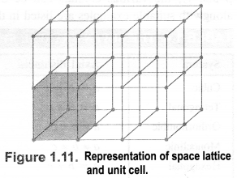Unit cell: Each bricks represents the unit cell while the block is similar to the space or crystal lattice. Thus, a unit cell is the fundamental building block of the space lattice.
(c) Tetrahedral void: A tetrahedral void is formed when triangular void made by three spheres of a particular layer and touching each other.
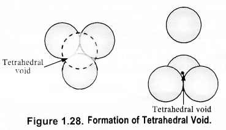
Octahedral void: An octahedral void or site is formed when three spheres arranged at the corners of an equilateral triangle are placed over anothet set of spheres.
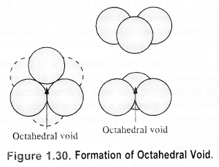
1.8 How many lattice points are there is one unit cell of each of the following lattices?
(i) Face centred cubic (if) Face centred tetragonal (iii) Body centred cubic
Sol.
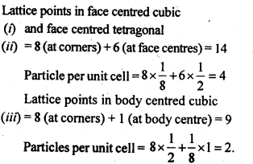
1.9 Explain:
(i) The basis of similarities and differences between metallic and ionic crystals.
(ii) Ionic solids are hard and brittle.
Sol. (i) Metallic and ionic crystals
Similarities:
(a) There is electrostatic force of attraction in both metallic and ionic crystals.
(b) Both have high melting points.
(c) Bonds are non-directional in both the cases.
Differences:
(a) Ionic crystals are bad conductors of electricity in solids state as ions are not free to move. They can conduct electricity only in die molten state or in aqueous solution. Metallic crystals are good conductors of electricity in solid state as electrons are free to move.
(b) Ionic bond is strong due to strong electrostatic forces of attraction.
Metallic bond may be strong or weak depending upon the number of valence electrons and the size of the kernels.
(ii) Ionic solids are hard and brittle.Ionic solids are hard due to the presence of strong electrostatic forces of attraction. The brittleness in ionic crystals is due to the non- directional bonds in them.
1.10 Calculate the efficiency of packing in case of a metal crystal for (i) simple cubic, (ii) body centred cubic, and (iii) face centred cubic (with the assumptions that atoms are touching each other).
Sol. Packing efficiency: It is the percentage of total space filled by the particles.
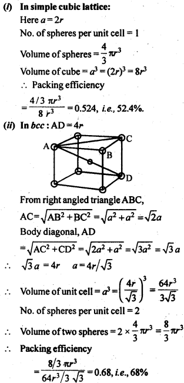
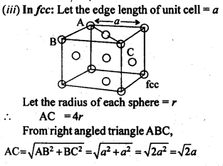
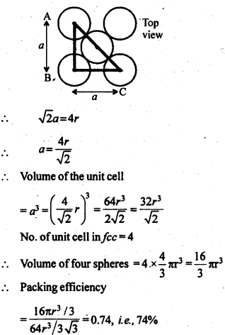
1.11 Silver crystallises in fcc lattice. If edge length of the cell is 4.07 x 10-8 cm and density is 10.5 g cm-3, calculate the atomic mass of silver.
Sol.
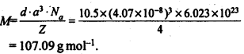
1.12. A cubic solid is made of two elements P and Q. Atoms Q are at the corners of the cube and P at the body centre. What is the formula of the compound ? What is the co-ordination number of P and Q?
Sol. Contribution by atoms Q present at the eight corners of the cube = \(\frac { 1 }{ 8 } \)= x 8 = 1
Contribution by atom P present at the body centre = 1
Thus, P and Q are present in the ratio 1:1.
∴ Formula of the compound is PQ.
Co-ordination number of atoms P and Q = 8.
1.13 Niobium crystallises in a body centred cubic structure. If density is 8.55 g cm-3, calculate atomic radius of niobium, using its atomic mass 93u.
Sol.
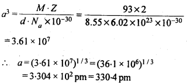
1.14 If the radius of the octahedral void is r and radius of the atoms in close-packing is R, derive relation between rand R.
Sol. A sphere is fitted into the octahedral void as shown in the diagram.
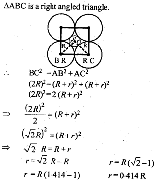
1.15 Copper crystallises into a fee lattice with edge length 3.61 x 10-8 cm. Show that the calculated density is in agreement with its measured value of 8.92 gcm-3.
Sol.
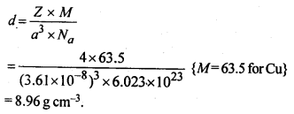
This calculated value of density is closely in agreement with its measured value of 8.92 g cm3.
Question 16.
Analysis shows that nickel oxide has the formula Ni0.98 O1.00. What fractions of nickel exist as Ni2+ and Ni3+ ions?
Solution:
98 Ni-atoms are associated with 100 O – atoms. Out of 98 Ni-atoms, suppose Ni present as Ni2+ = x
Then Ni present as Ni3+ = 98 – x
Total charge on x Ni2+ and (98 – x) Ni3+ should
be equal to charge on 100 O2- ions.
Hence, x × 2 + (98 – x) × 3 = 100 × 2 or 2x + 294 – 3x = 200 or x = 94
∴ Fraction of Ni present as Ni2+ = \(\frac { 94 }{ 98 } \) × 100 = 96%
Fraction of Ni present as Ni3+ = \(\frac { 4 }{ 98 } \) × 100 = 4%
Question 17.
What are semi-conductors? Describe the two main types of semiconductors and contrast their conduction mechanisms.
Solution:
Semi-conductors are the substances whose conductivity lies in between those of conductors and insulators. The two
main types of semiconductors are n-type and p-type.
(i) n-type semiconductor: When a silicon or germanium crystal is doped with group 15 element like P or As, the dopant atom forms four covalent bonds like Si or Ge atom but the fifth electron, not used in bonding, becomes delocalised and continues its share towards electrical conduction. Thus silicon or germanium doped with P or As is called H-type semiconductor, a-indicative of negative since it is the electron that conducts electricity.
(ii) p-type semiconductor: When a silicon or germanium is doped with group 13 element like B or Al, the dopant is present only with three valence electrons. An electron vacancy or a hole is created at the place of missing fourth electron. Here, this hole moves throughout the crystal like a positive charge giving rise to electrical conductivity. Thus Si or Ge doped with B or Al is called p-type semiconductor, p stands for positive hole, since it is the positive hole that is responsible for conduction.
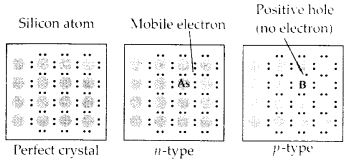
Question 18.
Non-stoichiometric cuprous oxide, Cu2O can be prepared in laboratory. In this oxide, copper to oxygen ratio is slightly less than 2:1. Can you account for the fact that this substance is a p-type semiconductor?
Solution:
The ratio less than 2 : 1 in Cu20 shows cuprous (Cu+) ions have been replaced by cupric (Cu2+) ions. For maintaining electrical neutrality, every two Cu+ ions will be replaced by one Cu2+ ion thereby creating a hole. As conduction will be due to the presence of these positive holes, hence it is a p-type semiconductor.
Question 19.
Ferric oxide crystallises in a hexagonal dose- packed array of oxide ions with two out of every three octahedral holes occupied by ferric ions. Derive the formula of the ferric oxide.
Solution:
Suppose the number of oxide ions (O2-) in the packing = 90
∴ Number of octahedral voids = 90
As 2/3rd of the octahedral voids are occupied by ferric ions, therefore, number of ferric ions 2 present = \(\frac { 2 }{ 3 } \) × 90 = 60
∴ Ratio of Fe3+ : O2- = 60 : 90 = 2 : 3
Hence, the formula of ferric oxide is Fe2O3.
Question 20.
Classify each of the following as being either a p-type or n-type semiconductor :
- Ge doped with In
- B doped with Si.
Solution:
- Ge is group 14 element and In is group 13 element. Hence, an electron deficient hole is created and therefore, it is a p – type semiconductor.
- B is group 13 element and Si is group 14 element, there will be a free electron, So, it is an n-type semiconductor.
Question 21.
Gold (atomic radius = 0.144 nm) crystallises in a face centred unit cell. What is the length of the side of the unit cell ?
Solution:
For a face centred cubic unit cell (fcc)
Edge length (a) = \(2\sqrt { 2 } r\) = 2 x 1.4142 x 0.144 mm = 0.407 nm
Question 22.
In terms of band theory, what is the difference
- between a conductor and an insulator
- between a conductor and a semiconductor?
Solution:
In most of the solids and in many insulating solids conduction takes place due to migration of electrons under the influence of electric field. However, in ionic solids, it is the ions that are responsible for the conducting behaviour due to their movement.
(i) In metals, conductivity strongly depends upon the number of valence electrons available in an atom. The atomic orbitals of metal atoms form molecular orbitals which are so close in energy to each other, as to form a band. If this band is partially filled or it overlaps with the higher energy unoccupied conduction band, then electrons can flow easily under an applied electric field and the metal behaves as a conductor.

If the gap between valence band and next higher unoccupied conduction band is large, electrons cannot jump into it and such a substance behaves as insulator.
(ii) If the gap between the valence band and conduction band is small, some electrons may jump from valence band to the conduction band. Such a substance shows some conductivity and it behaves as a semiconductor. Electrical conductivity of semiconductors increases with increase in temperature, since more electrons can jump to the conduction band. Silicon and germanium show this type of behaviour and are called intrinsic semiconductors. Conductors have no forbidden band.
Question 23.
Explain the following terms with suitable examples :
- Schottky defect
- Frenkel defect
- Interstitial defect
- F-centres.
Solution:
(i) Schottky defect : In Schottky defect a pair of vacancies or holes exist in the crystal lattice due to the absence of equal number of cations and anions from their lattice points. It is a common defect in ionic compounds of high coordination number where both cations and anions are of the same size, e.g., KCl, NaCl, KBr, etc. Due to this defect density of crystal decreases and it begins to conduct electricity to a smaller extent.
(ii) Frenkel defect : This defect arises when some of the ions in the lattice occupy interstitial sites leaving lattice sites vacant. This defect is generally found in ionic crystals where anion is much larger in size than the cation, e.g., AgBr, ZnS, etc. Due to this defect density does not change, electrical conductivity increases to a small extent and there is no change in overall chemical composition of the crystal.

(iii) Interstitial defect : When some constituent particles (atoms or molecules) occupy an interstitial site of the crystal, it is said to have interstitial defect. Due to this defect the density of the substance increases.
(iv) F-Centres : These are the anionic sites occupied by unpaired electrons. F-centres impart colour to crystals. The colour results by the excitation of electrons when they absorb energy from the visible light falling on the crystal.
Question 24.
Aluminium crystallises in a cubic close packed structure. Its metallic radius is 125 pm.
- What is the length of the side of the unit cell?
- How many unit cells are there in 1.00 cm3 of aluminium?
Solution:
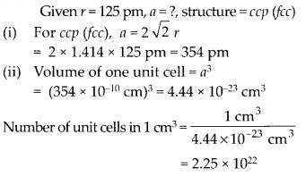
Question 25.
If NaCI is doped with 10-3 mol % SrCl2, what is the concentration of cation vacancies?
Solution:
Let moles of NaCI = 100
∴ Moles of SrCl2 doped = 10-3
Each Sr2+ will replace two Na+ ions. To maintain electrical neutrality it occupies one position and thus creates one cation vacancy.
∴ Moles of cation vacancy in 100 moles NaCI = 10-3
Moles of cation vacancy in one mole
NaCI = 10-3 × 10-2 = 10-5
∴ Number of cation vacancies
= 10-5 × 6.022 × 1023 = 6.022 × 1018 mol-1
Question 26.
Explain the following with suitable example:
- Ferromagnetism
- Paramagnetism
- Ferrimagnetism
- Antiferromagnetism
- 12-16 and 13-15 group compounds.
Solution:
(i) Ferromagnetic substances : Substances which are attracted very strongly by a magnetic field are called ferromagnetic substances, e.g., Fe, Ni, Co and CrO2 show ferromagnetism. Such substances remain permanently magnetised, once they have been magnetised. This type of magnetic moments are due to unpaired electrons in the same direction.
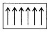
The ferromagnetic material, CrO2, is used to make magnetic tapes used for audio recording.
(ii) Paramagnetic substances : Substances which are weakly attracted by the external magnetic field are called paramagnetic substances. The property thus exhibited is called paramagnetism. They are magnetised in the same direction as that of the applied field. This property is shown by those substances whose atoms, ions or molecules contain unpaired electrons, e.g., O2, Cu2+, Fe3+, etc. These substances, however, lose their magnetism in the absence of the magnetic field.
(iii) Ferrimagnetic substances : Substances which are expected to possess large magnetism on the basis of the unpaired electrons but actually have small net magnetic moment are called ferrimagnetic substances, e.g., Fe3O4, ferrites of the formula M2+Fe2O4 where M = Mg, Cu, Zn, etc. Ferrimagnetism arises due to the unequal number of magnetic moments in opposite direction resulting in some net magnetic moment.
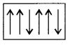
(iv) Antiferromagnetic substances : Substances which are expected to possess paramagnetism or ferromagnetism on the basis of unpaired electrons but actually they possess zero net magnetic moment are called antiferromagnetic substances, e.g., MnO. Antiferromagnetism is due to the presence of equal number of magnetic moments in the opposite directions
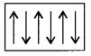
(v) 13-15 group compounds : When the solid state materials are produced by combination of elements of groups 13 and 15, the compounds thus obtained are called 13-15 compounds. For example, InSb, AlP, GaAs, etc.
12-16 group compounds : Combination of elements of groups 12 and 16 yield some solid compounds which are referred to as 12-16 compounds. For example, ZnS, CdS, CdSe, HgTe, etc. In these compounds, the bonds have ionic character.
More Resources for CBSE Class 12: